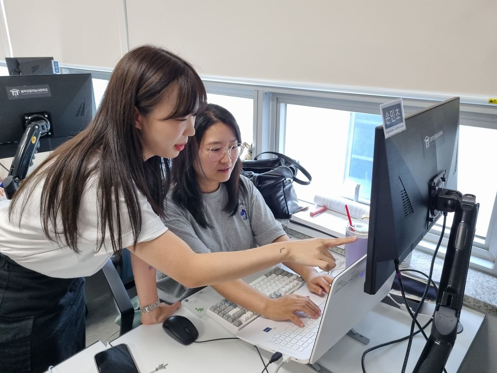

STARTING TOGETHER
처음부터 잘했던 건
아니었습니다.
2023.08.07 등록된 4기 인터뷰를 바탕으로 재구성한 이야기입니다.
출처: 「[인공지능사관학교 4기] LIVE SERIES - 비전공자 손민초님 인터뷰」
표기일은 아카이브 등록일입니다. 공개 아카이브 ↗
표기일은 아카이브 등록일입니다. 공개 아카이브 ↗
AICA ARCHIVE
한 사람의 경험이, 다음 사람의 시작으로.EDUCATION STORY
경제학을 전공한 손민초 교육생.
낯선 코드 앞에서의 망설임이
함께 만드는 경험으로 바뀌기까지.
손민초4기 교육생 · 경제학 전공
이야기 시작하기
STARTING TOGETHER
2023.08.07 등록된 4기 인터뷰를 바탕으로 재구성한 이야기입니다.
YOUR QUESTIONS, OUR STORIES
정답 대신, 먼저 겪은 사람의 경험을.
지금 나에게 필요한 이야기부터 읽어보세요.
이 질문의 경험담은 아직 준비 중입니다.
먼저 공개된 수업과 팀 프로젝트 이야기를 살펴보세요.
CONTINUE TO AICA NOW
교육생들이 만든 결과물과 함께했던 순간을 만나보세요.